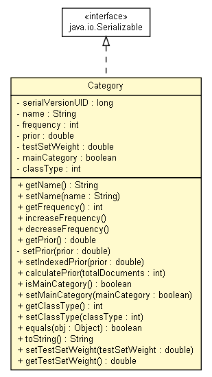

tud.iir.classification
Class Category

java.lang.Object
 tud.iir.classification.Category
tud.iir.classification.Category
- All Implemented Interfaces:
- java.io.Serializable
public class Category
- extends java.lang.Object
- implements java.io.Serializable
A category has a name and a relevance for certain resource.
- See Also:
- Serialized Form
| Methods inherited from class java.lang.Object |
clone, finalize, getClass, hashCode, notify, notifyAll, wait, wait, wait |
serialVersionUID
private static final long serialVersionUID
- See Also:
- Constant Field Values
name
private java.lang.String name
frequency
private int frequency
prior
private double prior
testSetWeight
private double testSetWeight
mainCategory
private boolean mainCategory
classType
private int classType
Category
public Category()
Category
public Category(java.lang.String name)
getName
public java.lang.String getName()
setName
public void setName(java.lang.String name)
getFrequency
public int getFrequency()
increaseFrequency
public void increaseFrequency()
decreaseFrequency
public void decreaseFrequency()
getPrior
public double getPrior()
- The prior probability of this category. Set after learning.
- Returns:
- The prior probability of this category.
setPrior
private void setPrior(double prior)
setIndexedPrior
public void setIndexedPrior(double prior)
- The prior can be indexed and read from the index.
Instead of calculating it via Categories.calculatePriors(), it can be set using this method.
- Parameters:
prior -
calculatePrior
public void calculatePrior(int totalDocuments)
isMainCategory
public boolean isMainCategory()
setMainCategory
public void setMainCategory(boolean mainCategory)
getClassType
public int getClassType()
setClassType
public void setClassType(int classType)
equals
public boolean equals(java.lang.Object obj)
- Equality is checked by category name.
- Overrides:
equals in class java.lang.Object
toString
public java.lang.String toString()
- Overrides:
toString in class java.lang.Object
setTestSetWeight
public void setTestSetWeight(double testSetWeight)
getTestSetWeight
public double getTestSetWeight()